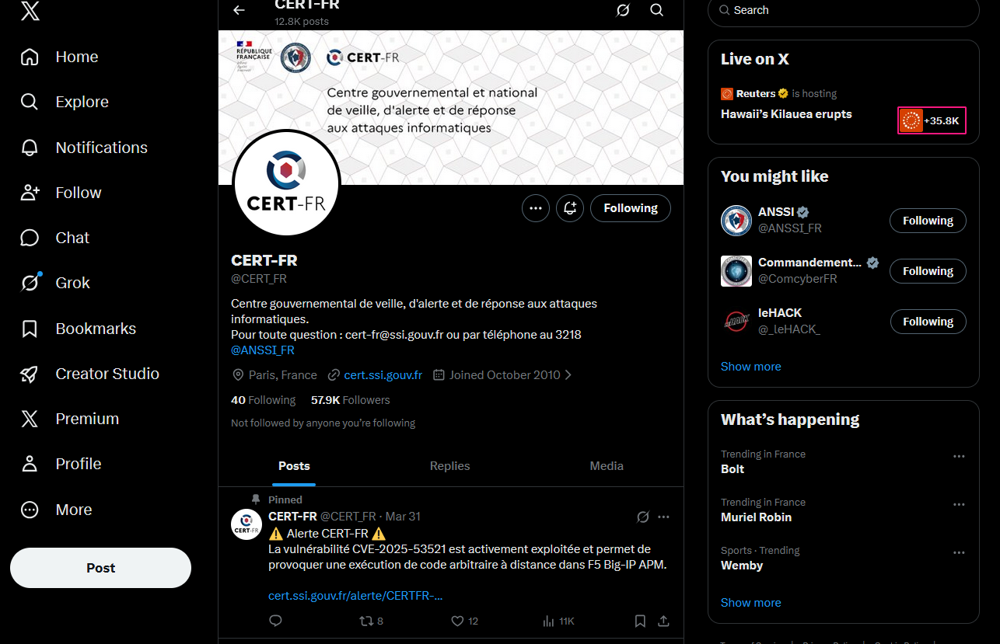

Portfolio · Paula Ciacan
Veille Technologique
Surveillance des menaces, vulnérabilités et actualités cyber
Mes outils de veille
CERT-FR & ANSSI — Alertes & avis de sécurité
Les alertes et avis de sécurité du CERT-FR sont reçus quotidiennement via le groupe Teams de l'entreprise, permettant de centraliser les informations critiques en temps réel. Je suis également le compte @CERT_FR sur X (Twitter) pour recevoir les alertes instantanément.

Feedly — Agrégateur de flux RSS
Feedly centralise plusieurs sources dans un seul fil : CERT-FR, Microsoft 365 Blog, Microsoft 365 Roadmap, Microsoft Dynamics 365 Blog et Microsoft 365 Security. Cela permet de suivre à la fois les vulnérabilités et les nouveautés produits Microsoft.

Exemple d'alerte CERT-FR
CERTFR-2026-AVI-0149 — Multiples vulnérabilités dans Microsoft Office
Cet avis signale de multiples vulnérabilités découvertes dans Microsoft Office. Les bulletins de sécurité Microsoft référencent plusieurs CVE publiés le 10 février 2026. Dans le cadre de mon alternance chez Jesto Informatique, ce type d'alerte est directement actionnable : vérification des versions installées sur le parc client, application des correctifs via Microsoft Update ou déploiement GPO, et communication aux utilisateurs concernés.
↗ Lire l'avis CERT-FR complet
Tableau de suivi de veille
| Titre & Source | Date | URL | Sévérité / CVE | Résumé |
|---|---|---|---|---|
| CVE-2024-21762 — Écriture hors limites dans FortiOS SSL-VPN (CERT FR / Fortinet PSIRT) | 08/02/2025 | cert.ssi.gouv.fr | Critique CVE 9.6 | Vulnérabilité d'écriture hors limites dans la fonction VPN SSL de FortiOS. Permet à un attaquant distant non authentifié d'exécuter du code arbitraire via des requêtes HTTP spécialement forgées. Activement exploitée selon la CISA. |
| CVE-2024-23113 — Exécution de code arbitraire via daemon FGFM (CERT FR / Fortinet PSIRT) | 08/02/2025 | cert.ssi.gouv.fr | Critique CVE 9.8 | Vulnérabilité dans le démon fgfm de FortiOS, FortiPAM, FortiProxy. Permet à un attaquant distant non authentifié d'exécuter du code ou des commandes arbitraires via des requêtes forgées. Interaction utilisateur requise. |
| CVE-2024-47575 — Zero-day affectant FortiManager (CERT FR / Fortinet PSIRT) | 23/10/2025 | cert.ssi.gouv.fr | Critique CVE 9.8 | Vulnérabilité zero-day dans FortiManager. Permet à un attaquant non authentifié de provoquer une exécution de code arbitraire à distance. Activement exploitée — utilisation d'adresses IP et configurations d'équipements gérés. |
| CVE-2024-55591 — Zero-day affectant FortiManager / FortiOS (CERT FR / Fortinet PSIRT) | 14/01/2025 | cert.ssi.gouv.fr | Critique CVE 9.6 | Concept public disponible depuis novembre 2024. Un attaquant ciblant un FortiGate reconnu Node.js peut s'en prévaloir et obtenir des droits super-administrateur. |
| CVE-2024-50001 — Contournement d'authentification critique (CERT FR / Fortinet PSIRT) | 14/01/2025 | cert.ssi.gouv.fr | Critique CVE 9.8 | Contournement d'authentification dans FortiOS et FortiProxy via des requêtes forgées au module websocket Node.js. Permet à un attaquant d'obtenir des privilèges super-administrateur et d'exécuter du code arbitraire. |
| CVE-2024-40591 — Élévation de privilèges dans Security Fabric (Fortinet PSIRT / CERT FR) | 14/01/2025 | fortiguard.com | Élevée CVE 8.8 | Défaut d'attribution de privilèges dans le composant Security Fabric de FortiOS. Un attaquant disposant de permissions Security Fabric peut élever ses privilèges jusqu'aux droits super-administrateur. |
| CVE-2024-46668 — Modification de mots de passe admin sans authentification sur FortiSwitch (Fortinet PSIRT / CERT Santé) | 09/01/2026 | cyberveille.esante.gouv.fr | Critique CVE 9.8 | Défaut dans la fonction set_password de l'interface GUI de FortiSwitch. Permet à un attaquant non authentifié de modifier les mots de passe administrateur via des requêtes spécialement forgées. |
| Post-exploitation FortiGate via les produits Fortinet — Campagne massive (CERT FR / PSIRT / Blog Fortinet) | 10/01/2026 | cert.ssi.gouv.fr | Multiple CVE | Technique de post-exploitation régissant les vulnérabilités antérieures sur FortiGate. Campagne massive confirmée en France avec des compromissions identifiées dès début 2023. |
| CERTFR-2026-AVI-0149 — Multiples vulnérabilités dans Microsoft Office (CERT-FR) | 11/02/2026 | cert.ssi.gouv.fr | Élevée | Multiples vulnérabilités dans Microsoft Office référencées par plusieurs bulletins CVE-2026. Correctifs disponibles via Microsoft Update. |